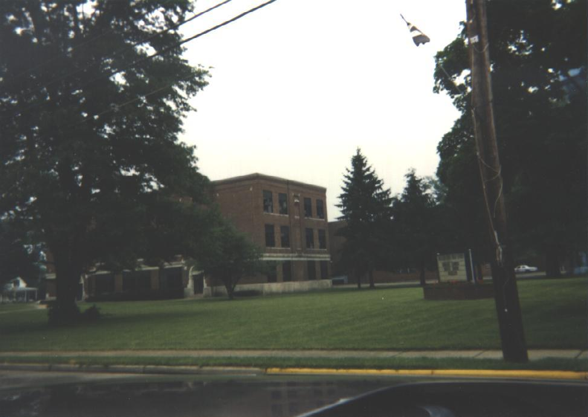

Williamsburg High School

Williamsburg High School is haunted by numerous ghosts. The county's last hanging tree was located where the library is. Three students jumped out of a third floor window. A janitor hung himself in the closet. A teacher shot herself on the third floor. Lights are seen moving through the school at night.
Back